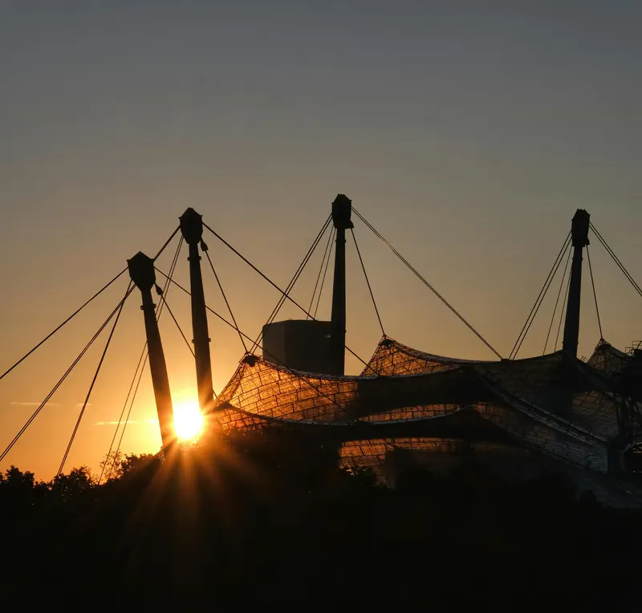
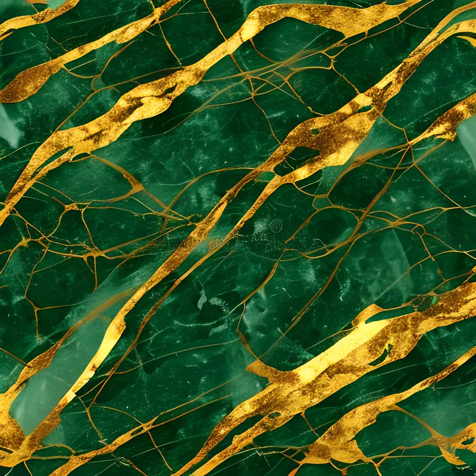
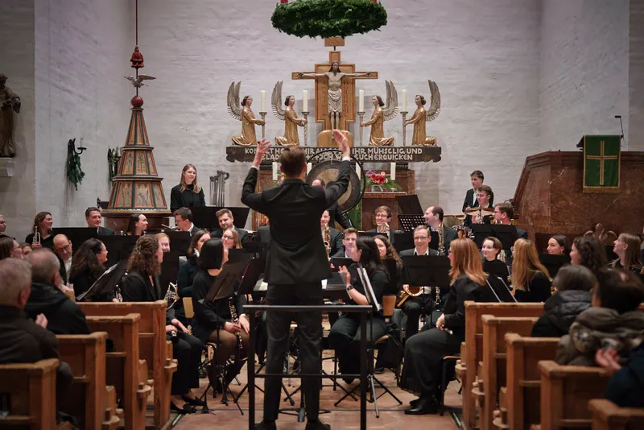
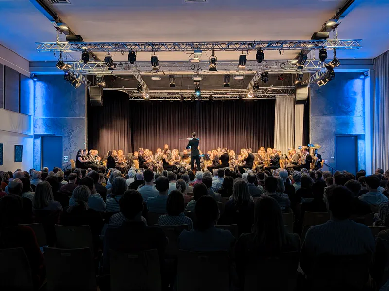
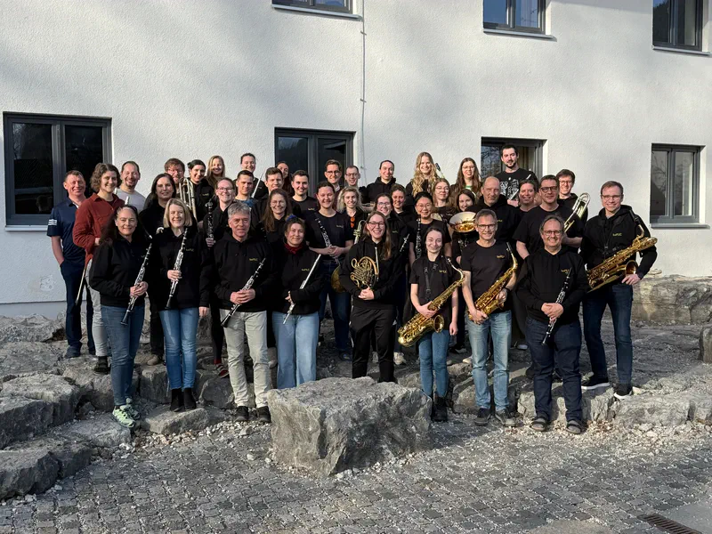
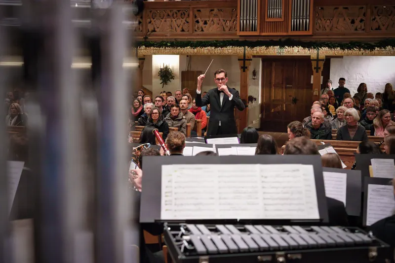
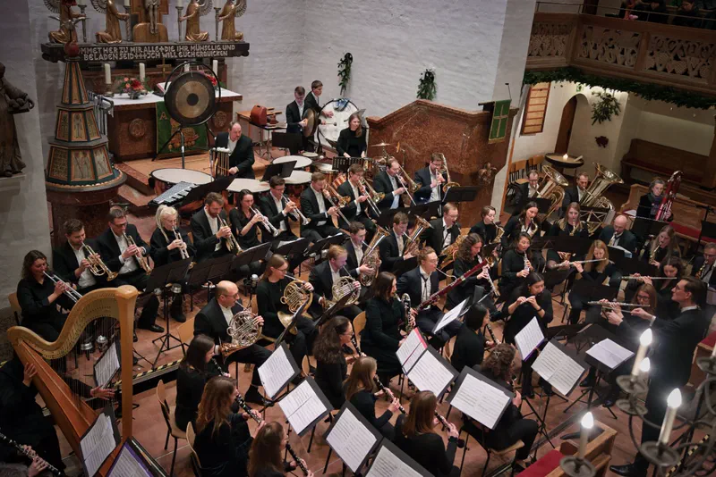
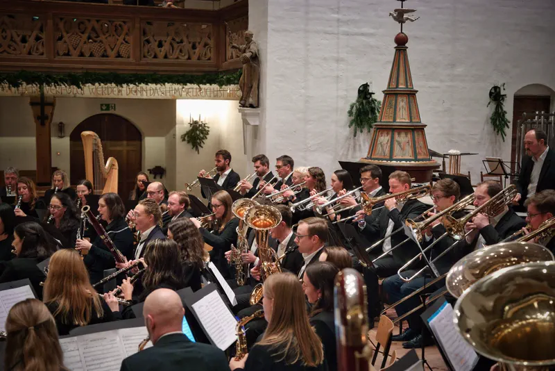
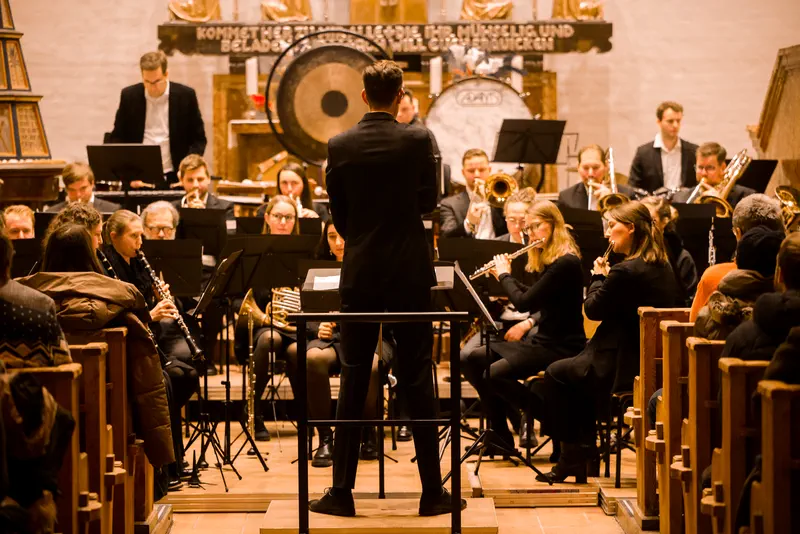
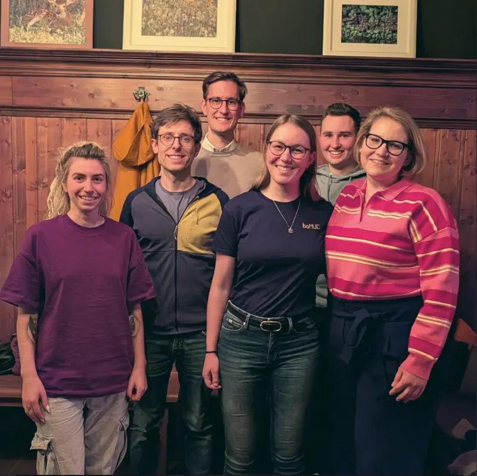

Sa, 05. Dez 2026
19:30 Uhr
Musik,
die bewegt.
Münchens sinfonisches Blasorchester. Live erleben.
50+Musikerinnen & Musiker
2023Gründungsjahr
6Konzerte gespielt
100%Ehrenamtlich
Konzerte
Von großer Konzertliteratur bis zu Filmmusik und Musical-Hits — zwei Programme pro Saison, die zeigen, wie vielseitig ein sinfonisches Blasorchester klingen kann.
Aktuelle Termine
Erlebe boMUC live.
Sa, 15. Mai 2027
19:30 Uhr
Frühlingskonzert 2027
Vergangene Konzerte
Unser Konzertarchiv.
{kind=link}
25. April 2026
Into the West
Programmhöhepunkte
- Legend of Maracaibo · José Alberto Pina
- Imagasy · Thiemo Kraas
- Shenandoah · Frank Ticheli
{kind=link}
29. Nov 2025
Across Borders
Programmhöhepunkte
- Russian Christmas Music · Alfred Reed
- Ouvertüre zu Dichter und Bauer · Franz von Suppè
- Highlights from “Chess” · arr. Johan de Meij
{kind=link}

17. Mai 2025
Zwischen Licht und Schatten
Programmhöhepunkte
- Tanz der Vampire · Jim Steinman, arr. Wolfgang Wössner
- Lord Tullamore · Carl Wittrock
- Rikudim · Jan van der Roost
- T-Bone Concerto · Johan de Meij · Solist: Henning Kühl
{kind=link}
07. Dez 2024
Misty Mountains
Programmhöhepunkte
- Red Rock Mountain · Rossano Galante
- Der Magnetberg · Mario Bürki
- Pilatus – Mountain of Dragons · Steven Reineke
{kind=link}

04. Mai 2024
Green & Gold
Programmhöhepunkte
- English Folk Song Suite · Ralph Vaughan Williams
- Songs from the Catskills · Johan de Meij
Aufbruch · 2023
05. Nov 2023
Aufbruch
Programmhöhepunkte
- Arsenal · Jan van der Roost
- Legend of Maracaibo · José Alberto Pina
- To My Country · Bernard Zweers
Publikumsstimmen
Was unsere Zuhörer sagen.
Ein fulminanter Auftakt — das Orchester hat das Publikum von der ersten Note an mitgerissen. Gespielt vor ausverkauftem Haus.Wochenanzeiger München · Nov 2023
Man hört sofort, dass hier Musiker mit Leidenschaft spielen. Das Konzert war ein gelungener, kurzweiliger Abend.Zuhörerin · Konzert »Green & Gold«
Von einfachen Chorälen bis hin zu fulminanten Passagen, da ist für jeden Konzertbesucher was geboten. Die Stimmung in der Kirche war unglaublich.Konzertbesucher · Stephanuskirche
Über uns
Rund 50 Menschen. Ehrenamtlich. Mit professionellem Anspruch.
Orchester
Ein Novum für Münchens Blasorchesterszene.
Seit 2023 bringen wir sinfonische Blasmusik in voller Orchesterbesetzung auf Münchens Konzertbühnen. Ehrenamtlich organisiert, professionell musiziert.
Unsere Besetzung
Rund 50 Musikerinnen und Musiker zwischen 19 und 63 Jahren, aus vielen Nationen, in München zusammengefunden. Die Schlüsselstimmen sind voll besetzt, das Schlagwerk spielt auf eigenem Instrumentarium.
Unsere Probenarbeit
Freitags von 19:30 bis 21:45 Uhr proben wir in der Aula der Grundschule an der Helmholtzstraße. In Proben wird nicht gübt, sondern geprobt: Es geht darum, die Basics zu beherrschen, so dass an Klang, Phrasierung und Zusammenspiel gefeilt werden kann, bis aus den Noten Musik wird. Dazu kommen Satz- und Registerproben nach Absprache sowie Probenwochenenden zur Konzertvorbereitung.
Unser Repertoire
Unser Schwerpunkt ist die Originalliteratur für sinfonsiches Blasorchester. Von Jan van der Roost bis Alfred Reed, von großer Konzertliteratur bis Film- und Musicalmusik: Jedes Programm folgt einer Dramaturgie aus Spannung und Energie und im Programm folgt keine Stücke zufällig auf einander.
Unsere Entwicklung
2023 mit gerade spielfähiger Besetzung gestartet, heute ein voll besetztes Orchester mit zwei großen Konzerten pro Jahr und wachsendem Stammpublikum. Im Mai 2027 spielen wir, unterstützt von der Curt Wills-Stiftung, in der Alten Kongresshalle [=> call-to-action spende].
{kind=link}

Vision
Wir wollen eine neue Institution für sinfonisch-konzertante Blasmusik in München schaffen — ein Novum für das kulturelle Angebot der Stadt.Florian Ullrich · Dirigent boMUC e.V.

Into the West · April 2026
Probenwochenende · April 2026
Across Borders · November 2025
Across Borders · November 2025
Across Borders · November 2025
Misty Mountains · Dezember 2024{kind=link}
Dirigent
Leidenschaft, die das Orchester trägt.
Florian Ullrich gründete das Blasorchester München 2023. Sein Ziel: musikalische Qualität, konzentrierte Proben und Konzerte, die Publikum und Orchester begeistern.
Sein Werdegang
In München geboren, mit neun Jahren Unterricht an der Klarinette. Er spielte in nationalen wie internationalen sinfonischen Blasorchestern. 2019 schloss er den C3-Lehrgang des Musikbundes Ober- und Niederbayern mit Auszeichnung ab.
Seine Impulse
Wichtige musikalische Impulse erhielt er in der Orchesterpraxis bei international agierenden Dirigenten. Prägend für Dirigat und Orchesterentwicklung war der langjährige Unterricht bei Manuel Epli.
Seine Arbeitsweise
Grundlage jeder Begeisterung sind musikalische Qualität und Freude am Spielen:
- Arbeit an Klang, Phrasierung und Zusammenspiel bis ins Detail
- Originalliteratur für sinfonisches Blasorchester im Zentrum des Repertoires
- konzentrierte Zeit in der Probe statt langer Abende
- langfristige Orchesterentwicklung statt kurzfristiger Effekte
- ausdrucksstarke, beeindruckende Konzerte die Orchester und Publikum gleichermaßen forndern
- ein Orchester, in dem man sich gerne engagiert
Sein zweites Fach
An der Ludwig-Maximilians-Universität München schloss er sein Chemiestudium mit Promotion ab und ist Teamleiter der Qualitätskontrolle in der chemischen Industrie — eine zweite Schule für Präzision, die auch seine Probenarbeit prägt.
Vorstand
Die Köpfe hinter boMUC.
{kind=link}

- SF
Sarah Feigl
Vorsitzende
- LM
Lukas Müller
stellv. Vorsitzender
- KH
Kim Hasselbach
Marketing
- AW
Antonia Waldner
Kassiererin
- DW
Dominik Wiedenmann
Schriftführer
- FU
Florian Ullrich
Dirigent
Kontakt
Ob Konzertanfrage, Mitspielen oder Unterstützung — wir freuen uns auf deine Nachricht.
Allgemein
Schreib uns.
Für Konzertanfragen, Kooperationen und Presse erreichst du uns am schnellsten per E-Mail.
- Verein
- boMUC e.V.
- info@bomuc.org
- Web
- www.bomuc.org
Mitspielen
Werde Teil von etwas Besonderem.
Du spielst ein Blasinstrument und suchst ein Ensemble, das Niveau mit Gemeinschaft verbindet? Bei boMUC findest du beides — mitten in München.
- Probentag
- Freitag
- Zeit
- 19:30 – 21:45 Uhr
- Saison
- Oktober bis April
Voraussetzungen
- Du spielst ein sinfonisches Blasinstrument auf gutem Niveau.
- Du nimmst regelmäßig an Proben und Konzerten teil.
- Du bringst echte Begeisterung für konzertante Blasmusik mit.
- Du schätzt ein kollegiales, offenes Miteinander auf Augenhöhe.
Unterstützen
Hilf uns, Musik zu ermöglichen.
Als junger Verein freuen wir uns über passive Mitglieder, Spenden und Sponsoren. Am einfachsten hilfst du uns, indem du zum Konzert kommst.